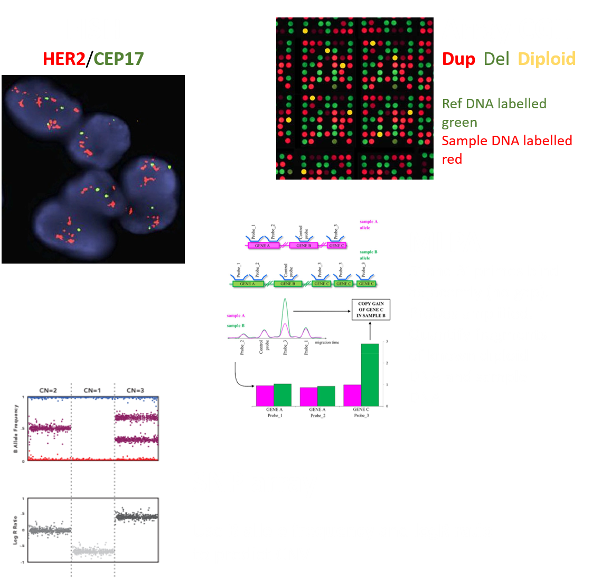
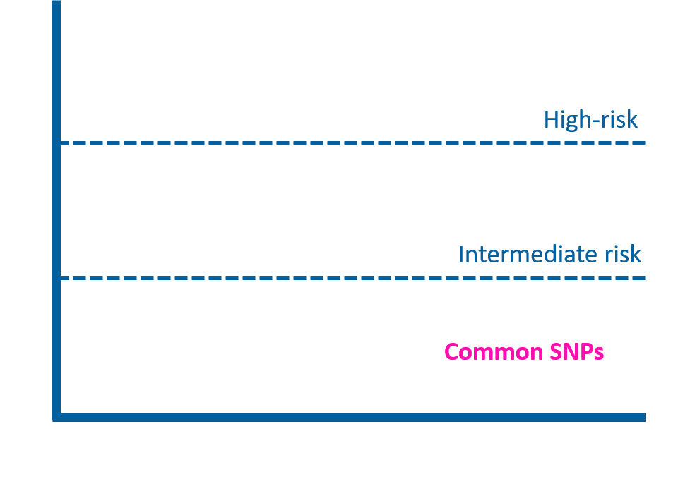
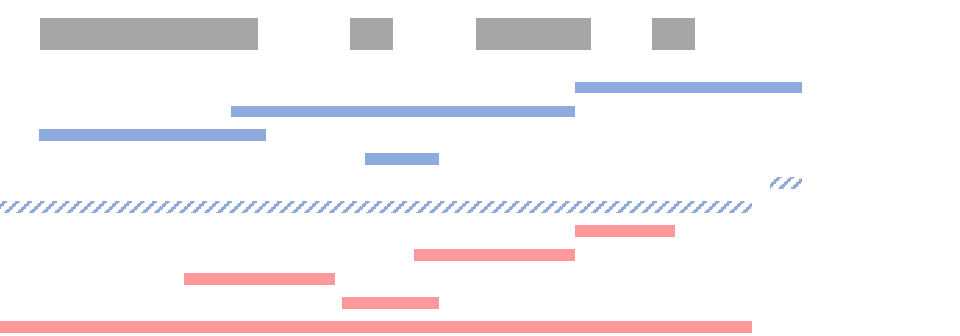

Copy Number Variants and Cancer
Lecture Plan
- Background
- Genomic variation
- Copy number variants
- Genetic risk in Cancer
- Computational biology: Pro’s
(and con’s)
- Case example: Endometrial cancer and copy number variants
Genomic variation
Copy number variants
Copy number variants (CNV) are a subset of structural variants
- CNVs are the number of copies of a DNA loci (i.e. genes) that vary between individuals.
10% of the human genome contributes to CNVs1, 1% of human genome contributes to SNPs.
Rare CNV (<1% MAF) are 800x more likely to be deleterious compared to rare SNV2.
1 Zarrei et al. (2015) Nat Rev Genet. 16, 172-183.
2 HJ Abel et al. (2020). Nature. 583,83-89.
CNV detection
- Fluorescence in situ hybridization (FISH)
- Array Comparative genomic hybridization (CGH)
- qPCR
- MLPA
- SNP array
- Next-generation sequencing

Cancer is the most common human genetic disease. The transition from a normal cell to a malignant cancer is driven by changes to a cell’s DNA.
Genetic Risk of Cancer
DNA variants alter the risk of cancer.
Kuchenbaecker et al. (2017) JAMA. 317(23), 2402-2416.
Genetic Risk of Cancer
There are 313 common genetic variants associated with a low increase in breast cancer risk. There is up to a 4-fold increase in breast cancer for woman that harbour the greatest number of these risk allele1.

1 N. Zeinomar & W.K. Chung (2020) Ann Intern Med. 174(3), 408-412.
Why Computational Biology?
- Lots of data (dataset sizes and databases)
- Visualisation - makes a big problem seem small
Example: Gene expression data from 25,000 genes for two cell lines with two treatments
Why Computational Biology?
- Lots of data (dataset sizes and databases)
- Visualisation - makes a big problem seem small
- Efficiency
- New tools and methods - simulations, statistics
Barriers:
- Can seem ‘foreign’ and difficult to learn
- Requires a solid statistical foundation (can be learnt on the fly)
- Can over-engineer solution
Omics’ data is complex and LARGE
| File Type | Size | No. Features | |
|---|---|---|---|
| Next Gen Sequencing | base calls (.fastq) | 10-100 Gb | Up to everything |
| Microarray | Intensities | 100 Mb - 10 Gb | 10,000s - millions |
Introduction to R
R and Rstudio 

R is a programming language commonly used in the biological sciences.
It is not the only suitable language (Python, C++, Bash)
RStudio is an integrated development environment (IDE) for R. Basically, makes R more usable.
R terminology
## variables
x <- 1
y <- c(1,2,3)
z <- c("a","b","c")
## matrices
m <- matrix(c(1,3,2,5,-1,2,2,3,9),nrow=3)
## data.frames
df <- data.frame(col1=z, col2=y, col3=c("a",1,"c"))
## lists
list.df <- list(df,mtcars, iris)
## functions
mean(c(1,2,5,23,43))
sd(y)
y2 <- y*sample(5:50,1) ## multiple y by a random number between 5-50
t.test(y,y2)
## libraries (suites of functions)
library(tidyverse) ## used for data wrangling
library(ggplot2) ## nicer plotting
library(openxlsx) ## read data store in as excel files
## installing libraries(packages)
install.packages('devtools') ## if on CRAN
BiocManager::install("hpar") ## if on bioconductor
devtools::install_github("yanlinlin82/ggvenn") ## if on githubGenetic Risk of Endometrial Cancer
Cassie’s PhD
Genetic Risk: Small variants
Genetic Risk: Copy number variants
Copy number variants are regions of genome where the number of copies differ between individuals.
How do these variant effect cancer risk?
Cassie’s dataset
- Woman genotyped with (case) and with out EC
- CNVs called from array data (gene-centric) and associations study (GWAS) performed
- 3 GWAS types: Deletions, duplication and Loss of function
| - | Number of samples |
|---|---|
| Case | 4,155 |
| Control | 17,818 |
SNP array and CNVs
\(BAF = A/B\)
\(Log R Ratio = log2(R~observed~/R~expected~)\)
Deletion (example): Only one copy of DNA, therefore the observed intensity (R) is less than expected and all the signal will either be the A (BAF=0) or B (BAF=1) allele.
Genome-wide association study
HYPOTHETICAL:
Whole gene duplications and Endometiral Cancer risk?
Approach
Cassie’s loss of function data used CNV predicted that:
- Delete a gene (part of or entire gene)
- Partially duplicated a gene (not whole gene)

Duplication are frequently in tandem, therefore a partial gene duplication would disrupt the coding sequence.
Only the ‘duplication’ GWAS tested whole gene duplications.
Whole gene duplications
- Find significant associations (genes) unique to the duplication GWAS (i.e. whole gene duplications)
library(openxlsx)
library(tidyverse)
## Read in data
sheetNames <- getSheetNames("data/GWAS_3probe.xlsx")
df <- lapply(sheetNames, function(i) read.xlsx("data/GWAS_3probe.xlsx", sheet = i))
names(df) <- sheetNames
df<-data.table::rbindlist(df, fill=T, idcol = "GWAS")
df %>% filter(GWAS != "DEL", P_value <0.05) %>%
group_by(Gene_symbol) %>%
summarise(n=n(), GWAS) %>%
filter(n==1, GWAS == "DUP")| Gene Symbol | p value | Cases | Controls |
|---|---|---|---|
| FRMD1 | 1.78e-05 | 119 | 327 |
| GPRIN2 | 2.28e-04 | 34 | 68 |
| CRHR1 | 2.31e-04 | 9 | 5 |
| DGCR6 | 1.24e-03 | 48 | 120 |
| PRODH | 1.24e-03 | 48 | 120 |
| CSF2RA | 1.99e-03 | 8 | 7 |
What next
More analysis (e.g. Pathway analysis) and more context (e.g. what tissue is gene expressed?)
- Databases (GTEx, Human Protein Atlas, TCGA/cbioportal, CCLE)
Pathway analysis
- Size reduction: 100’s-1000’s of genes ➙ dozens of pathways
- Tells a biological story
Many different methods
Many annotation (gene groupings)
- KEGG
- Reactome
- Wikipaths
- Gene ontology (GO)
Performing pathway analysis
Webtools:
R:
library(clusterProfiler)
library(org.Hs.eg.db)
load("data/wholegene_dup0.05.Rdata")
entrezid<-mapIds(org.Hs.eg.db,
keys= dup.sig$Gene_symbol,
column="ENTREZID",
keytype="SYMBOL")
entrezid<-entrezid[!is.na(entrezid)]
ego <- enrichGO(gene = entrezid,
OrgDb = org.Hs.eg.db,
ont = "BP",
pvalueCutoff = 1,
qvalueCutoff = 1,
readable = TRUE)
barplot(ego, color="pvalue")Pathway analysis - Deletions
More interesting enrichment analysis for significant deletions:
Utlising public data
Human Protein Atlas, GTEx, TCGA and CCLE
Utlising public data
Human Protein Atlas, GTEx, TCGA and CCLE
Utlising public data
Human Protein Atlas, GTEx, TCGA and CCLE
Utlising public data
Human Protein Atlas, GTEx, TCGA and CCLE
Ranking potential candidates


Questions?
Lecture slides and code: https://github.com/wigge206/BBiomedSc2023
Email: george.wiggins@otago.ac.nz